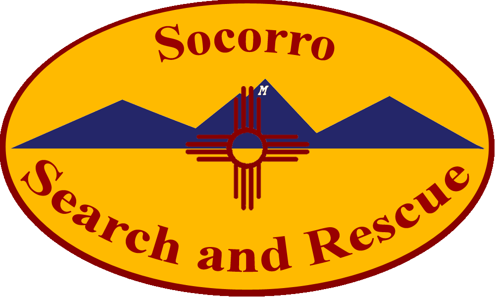

Socorro Search and Rescue (SSAR) is a volunteer search and rescue team based in Socorro, NM. Team members consist primarily of New Mexico Intitute of Mining and Technology Students. SSAR is a member team of the New Mexico Search and Rescue Council (NMSARC).
Members respond 24 hours a day in all weather conditions to provide primary Search and Rescue capabilities to New Mexico State Police District 11 (Socorro, Catron, and Sierra Counties), as well as throughout the entire state as needed. Because of the importance of this task, our members are required to attend team-sponsored training sessions and are further encouraged to attend state sponsored trainings.
Members must supply their own basic backpacking equipment. The team maintains a cache of more specialized rescue and first aid equipment including stokes litters, first aid supplies, and communications equipment.
We rely solely on volunteers from the community and we are always looking for individuals who are up to the challenges and rewards that search and rescue has to offer. If you have the courage to make a difference, come join our team!
Meetings are currently held on the first Tuesday of every month at 20:00 hrs from September through May and trainings are held several times each year. These meetings and trainings are Open Invitation to prospective members and interested members of the community. More information on upcoming events can be found by clicking on the calendar tab at the top of the page.